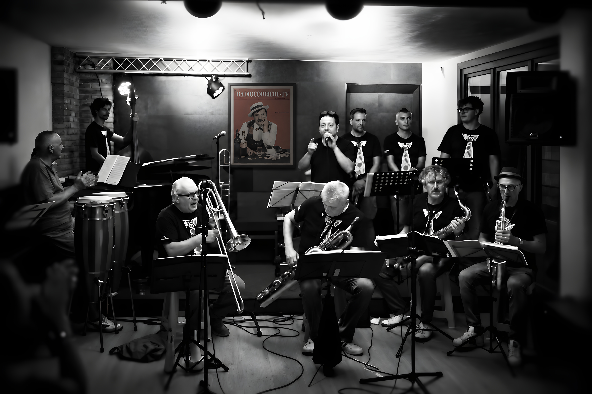
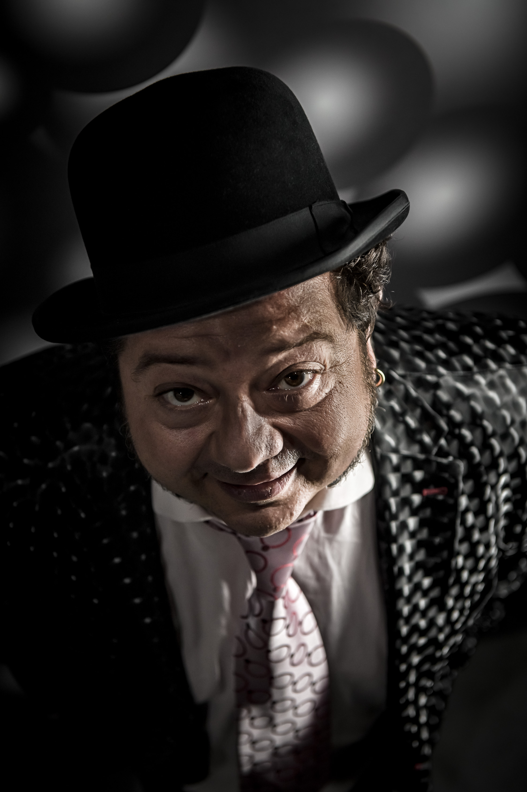
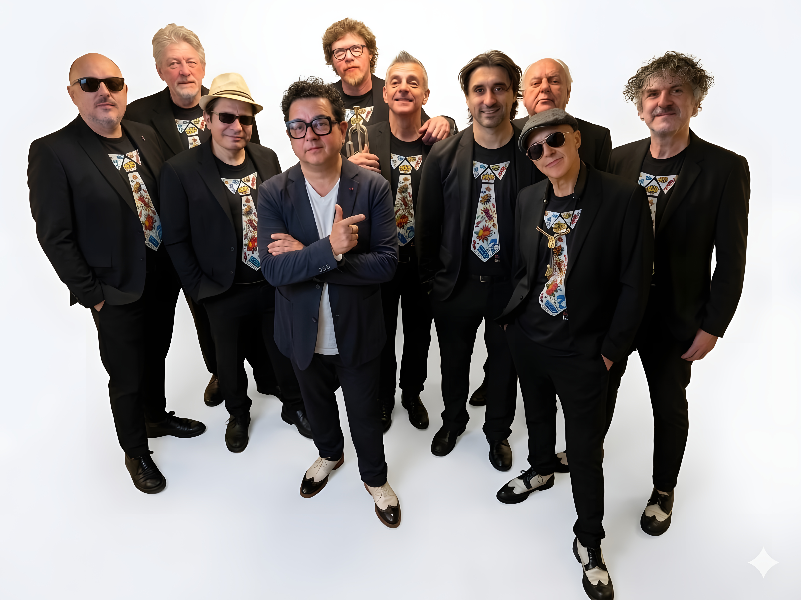
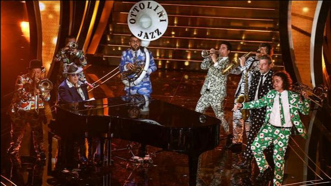
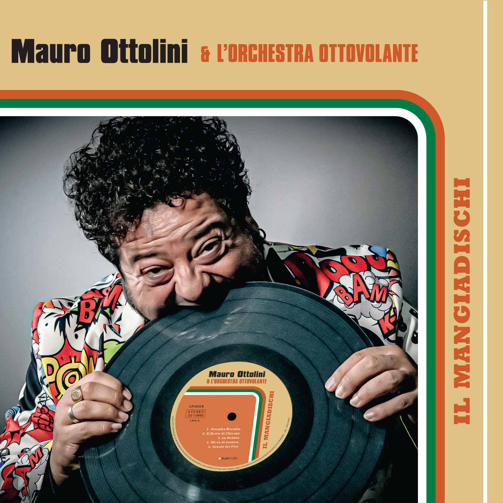
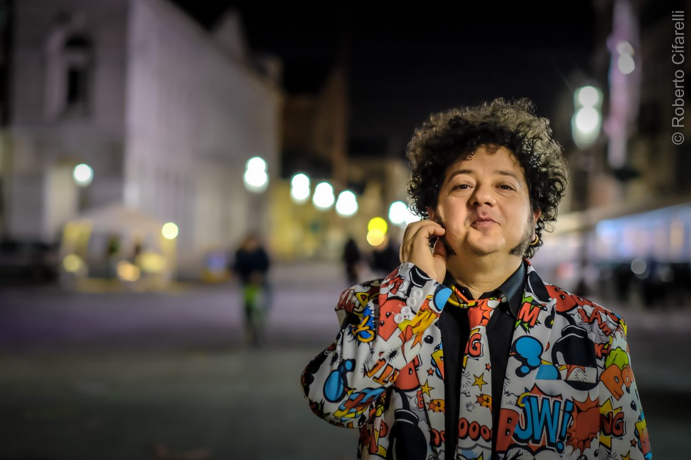
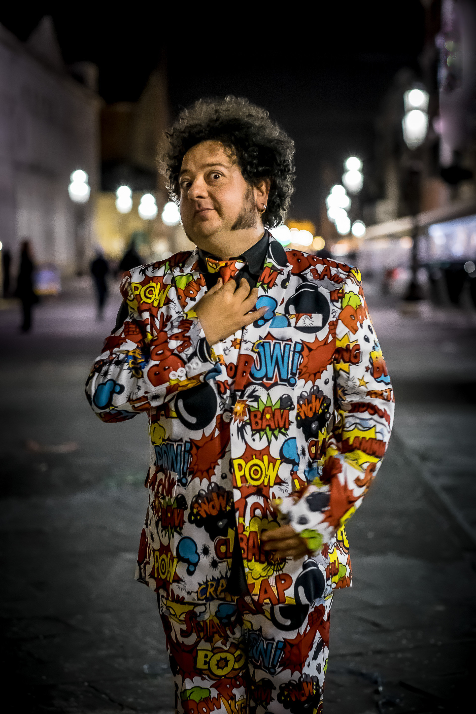
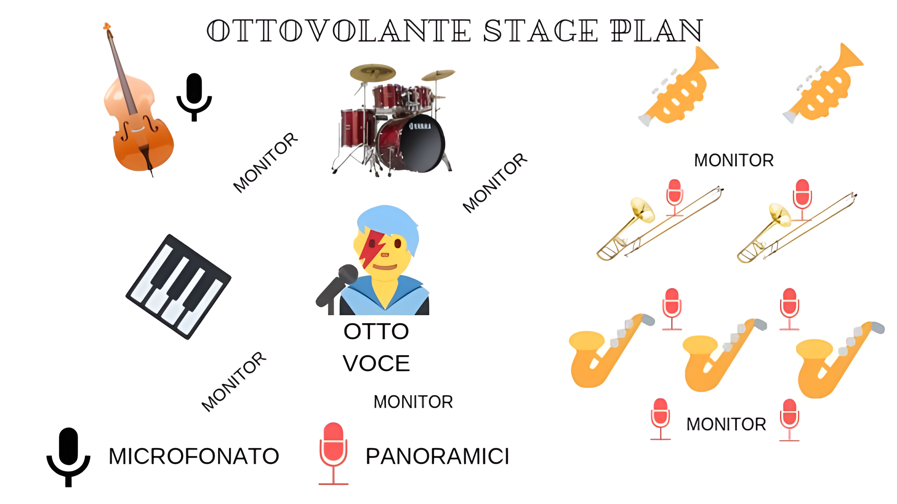

Da vent'anni ormai Mauro Ottolini e l'Orchestra Ottovolante si dedicano ad un repertorio tutto italiano, reinterpretando con nuovi arrangiamenti, alcune tra le più belle canzoni che hanno fatto la storia della musica. Molte di queste composizioni sono diventate dei veri e propri standard interpretati da grandi jazzisti come Chet Baker, Louis Armstrong e Stan Getz per citarne alcuni. Mauro Ottolini alla direzione della sua orchestra di 13 musicisti, nelle vesti di cantante e solista al trombone, reinterpreta con arrangiamenti originali alcune tra le più belle composizioni di Fred Buscaglione, Renato Carosone, Domenico Modugno, Gorni Kramer, Trio Lescano, Natalino Otto, Fatima Robin's e moltri altri, rielaborando gran parte di questo repertorio con arrangiamenti originalissimi dal sapore tutto latino: rumba, mambo, cha cha, merengue e con grandi ospiti come Fabrizio Bosso alla tromba.
Mauro Ottolini e l'Orchestra Ottovolante si sono esibiti in alcuni dei più importanti festival italiani ed europei, tra questi Umbria Jazz, il Festival del Cinema di Varsavia, Grey Cat Festival Firenze, Brainzone Music Festival, e molti altri. La sezione fiati dell'Orchestra Ottovolante, guidata da Mauro Ottolini, è molto richiesta per produzioni discografiche (ad esempio Cip! di Brunori sas 2020, Maader Folk di Davide Van de Sfroos 2021 e ultimamente con Marco Mengoni), nel 2019 hanno accompagnato dal vivo al Festival di Sanremo il grande pianista e cantautore Raphael Gualazzi e nel 2021 sul palco della finale di X Factor e in diretta televisiva hanno accompagnato il cantante Mika con una versione arrangiata da Mauro Ottolini del suo brano Lollipop.


Mauro Ottolini alla direzione della sua orchestra "OTTOVOLANTE" nelle vesti di cantante e solista al trombone , reinterpreta con arrangiamenti originali alcune tra le più belle composizioni di Fred Buscaglione, artista di riferimento per tutta la musica italiana.Uno spettacolo di grande spessore musicale e divertimento,per ripercorrere la vita e i grandi successi di Fred.Ottolini,con la sua orchestra si è esibito nei piu importanti teatri,e festival italiani,ed europei,con un repertorio italiano che ha fatto cantare e ballare tutto il mondo.

VIDEO: Mauro Ottolini canta Fred Buscaglione
VIDEO: I brass dell'Ottovolante in un arrangiamento di Mauro Ottolini accompagnano il grande cantante MIKA durante la finale di XFactor 2021

Mauro Ottolini, è considerato uno dei più importanti musicisti italiani. Compositore, arrangiatore, polistrumentista e specialista degli ottoni, si diploma in Trombone e Tromba nel ‘93 con il massimo dei voti al conservatorio di Verona, e qualche anno dopo arriva il diploma in jazz al conservatorio di Trento. Oltre al suono del trombone come strumento principale, suona e approfondisce il linguaggio di tutti gli ottoni, come il Sousaphone, la tromba, il flicorno, la tromba bassa e l’eufonio. Nel 2012 si aggiudica il premio della critica nazionale "Top Jazz" come "miglior musicista jazz italiano". Viene premiato come compositore e arrangiatore, vincendo più volte riconoscimenti dalla critica. Collabora per molti anni con il grande trombettista jazz Enrico Rava, e vanta collaborazioni con Kenny Wheeler, Dave Douglas, Paolo Fresu, Trilok Gurtu, Stefano Bollani, Jan Garbarek, Franco D Andea,Carla Blay,Fabrizio Bosso, Frank Lacy, Steve Swallow, Tony Scott, Han Bennink, Maria Schneider, Gary Valente, Sean Bergin, e molti altri. Collabora anche con alcuni grandi nomi della black music mondiale come Grace Jones, Gino Vannelli, Emy Stewart, Joe Bowie. Anche in Italia Ottolini ha avuto la fortuna di affiancare grandi nomi, tra i quali Vinicio Capossela, Lucio Dalla, Patty Pravo, Rossana Casale, Alberto Fortis, Gino Paoli, Giuliano Sangiorgi, Negramaro, Subsonica, Daniele Silvestri, Raphael Gualazzi, Gaetano Curreri, Morgan, Renzo Rubino,Malika Ajane, Simona Molinari, Karima, Petra Magoni, Roy Paci, Motta, Brunori SAS, e molti altri.
Ha insegnato alla New York University e tenuto corsi in importanti scuole e conservatori, tra questi il conservatorio superiore di jazz a Parigi, una delle più importanti scuole in Europa. Un incontro molto particolare e ricco di stimoli è stato quello con il trombonista Steve Turre. Grazie a lui Ottolini impara a suonare le conchiglie marine, con talento e follia, tanto da realizzare un progetto alquanto ambizioso, Sea Shell un disco e un cartone animato che sono un atto di rispetto nei confronti dell’universo marino e insieme di denuncia per l’inquinamento ormai insostenibile. Questo progetto, prodotto dall'etichetta Azzurra Music, ha avuto il sostegno di Greenpeace, Legambiente, Umbria Jazz ed altri enti. Per Mauro Ottolini la conoscenza e la ricerca sono la base per creare un sound di qualità e uno stile raffinato ed unico.
Mauro Ottolini è stato nominato Ambasciatore alla cultura in Veneto per UNESCO.
Proprio nel 2019 viene dedicata al musicista veronese la scoperta di una nuova specie di conchiglia, che il museo malacologico di Cupra Marittima, ha dedicato ad Ottolini dandole in nome di "Turritella Ottolinii"


Pianoforte Mezza Coda mod. Yamaha C3 o similari
Posizionamento dei microfoni del pianoforte: 30 cm sopra le corde centrali a 20 cm dai martelletti, con il coperchio rimosso o retto dal bastone lungo.
Contrabbasso professionale, con amplificatore per basso (mark bass, ampeg, gallien krueger o quello che c'è), se possibile un microfono DPA o simili (ma non è indispensabile), una spia, leggio.
Ci sono 7 fiati in sezione (come da stage plain) andranno microfonati con 6 mic panoramici. Sui sax (che suonano anche clarinetto) mettiamo anche 2 schure sm 58.
I mic panoramici, andranno posizionati 2 davanti alla sezione sax, 2 davanti ai tromboni, 2 davanti alle trombe.
Per la sezione fiati servono inoltre 2 monitor spia, e 7 leggio, 5 sedie senza braccioli (le 2 trombe stanno in piedi)
